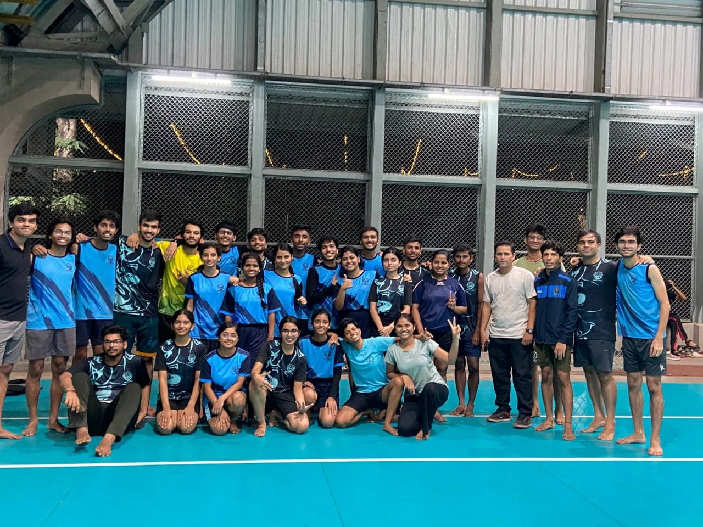
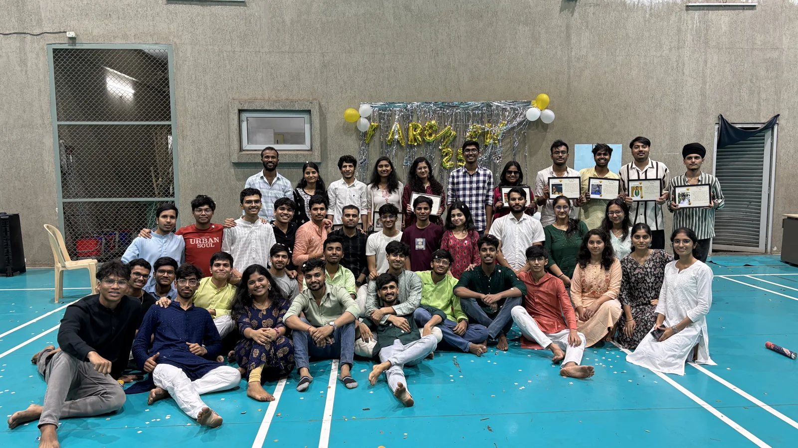
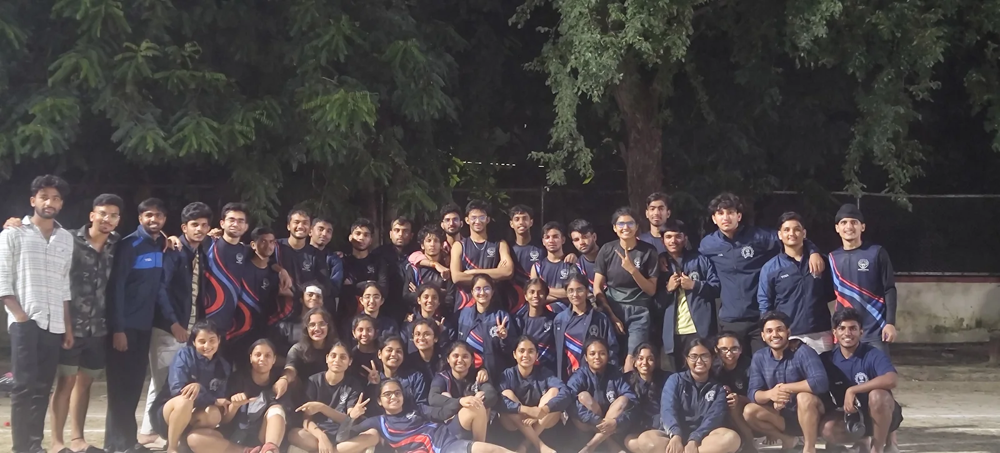

Indoor Court
- One fully lighted indoor court with a Kho-Kho pitch and Kabaddi mat, open all days.
- Timings: 6:00 AM – 10:00 PM.
Kho-Kho, Kabaddi and Tug of War bring agility, strategy and collective effort together. Get to know the playing space, campus activities and people to contact about joining in.
Find your starting pointSpaces, equipment and practice.
Get to know what the sport offers.

Facility descriptions are from the institute’s October 2026 archive. Confirm current access, hours, equipment and coaching arrangements with the sports office.
Camps, institute competitions and ways to take part. Explore the activities described by the sports community.
These are archived activity descriptions, not upcoming fixtures. Ask the team about current dates, entry and eligibility.
This event is held once a year in the Spring Semester for All Boys and in the Autumn Semester for the All Girls, and is part of the Inter Hostel Sports General Championship.
The Government of India, through its National Sports Organization, provides a scheme in all IITs where all incoming first-year students must sign up for a particular sport and undergo training. This scheme, popularly called NSO, is available to IIT students for training in various sports, such as swimming, hockey, basketball, squash, badminton, tennis, athletics, Kho-Kho, handball, table tennis, football, and more.
The Institute Kho-Kho League is the most awaited event of the IIT Bombay Kho-Kho club and is held during the Spring Semester. This tournament is open to all students. It is a highly competitive league tournament organised using the IPL format.
The Institute Kabaddi League is an event held during the Spring Semester, open to all students. In this event, teams are formed through an exhilarating auction.
The Battle of Batches is an inter-year event in which students from different NSO and NCC batches showcase their skills and sportsmanship. This spirited competition brings together teams representing each batch, from freshmen to seniors, in a series of thrilling matches. It is held during the Spring Semester.
Kho-Kho is a new, budding sport in our institute. Being easy to learn, it attracts a lot of beginners — so for enthusiasts, we organise various Beginners’ and Intermediate Camps over the year, plus a summer advanced training camp for the betterment of the Institute Kho-Kho team.
Historical results from the institute’s published source, preserved with their original years.
Boys Kho-Kho:Gold Girls Kho-Kho:Bronze
Boys Kho-Kho: Silver Girls Kho-Kho: Silver Girls Kabaddi:Gold
Boys Kho-Kho: Gold Girls Kho-Kho: Gold
Ask the sports office for the current entry point and access arrangements.
Contact the sports officeAsk about getting started, current training, access or the right route into a team.
Contacts below are from the institutional snapshot of 18 October 2026. Confirm the current office-holder before reaching out.
Contact the sports office
Indian games, on campus.
Photographs from the archive.

Another way to play
Lawn tennis ↗